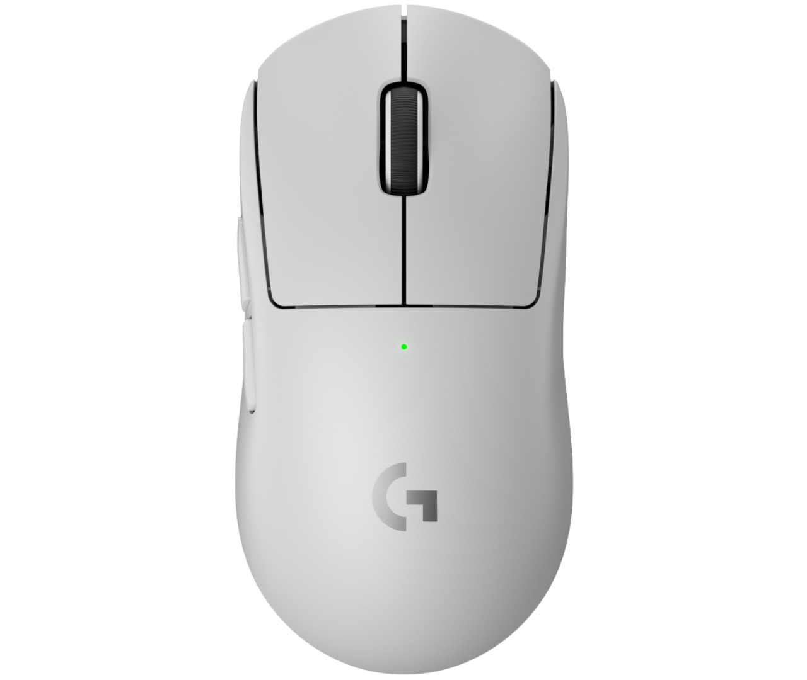

Geral
VISÃO DO DISPOSITIVO

CLIQUE NAS TECLAS ABAIXO PARA CONFIGURAR
Macro
CONFIGURAR TECLAS DO MOUSE
Perfis
CONFIGURAÇÕES SALVAS
Atalhos
ATALHOS GLOBAIS
Configurações
GERAIS DO SISTEMA
Janela de CPS
Janela overlay de CPS
Sempre visível
Animar transições
Tema
Escuro
Claro
Consumo de RAM
Uso atual
—
MB
RAM instalada
—
GB
% do sistema
—
%
Versão 1.0.0
Overlay
CUSTOMIZAR JANELA DE CPS
Elementos
Aparência Geral
Cor de fundo
92%
Cor da borda
Glow da borda
20
Perfis de Customização
Perfis salvos
Carregando…
Preview ao vivo
SLOT 1: ATIVO (13.5 CPS) · SLOT 2: IDLE